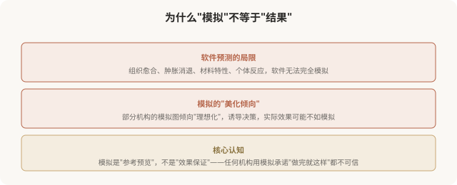
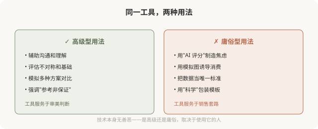

先说结论：数字化设计（3D 成像、CT 三维重建、AI 面部分析、术前模拟）是技术型医美的重要工具，能帮助术前预见结果、医患沟通更直观。但它有明确的局限：模拟不等于现实，软件预测的与实际效果可能有差距；AI 测脸的结果受算法影响，不是绝对客观；更关键的是，技术工具的好坏取决于使用者的审美思路，同样的 3D 模拟，有高级思路的医生用来设计协调方案，庸俗型医生用来推销“全套套餐”。理解这些边界，才能用好而不被它奴役。
数字化工具能做什么

模拟≠现实，最重要的边界

AI 测脸的陷阱
近年来流行“AI 测脸”，上传照片，AI 输出“颜值评分”“缺陷分析”“推荐项目”。这类工具的问题：
- 算法有偏见：AI 训练数据决定它的“审美标准”，往往是某种流行审美（如幼态脸），不是客观真理。
- 制造焦虑：AI 找出“缺陷”的能力远超肯定“特征”，它总能量化出你“不达标”的部分。
- 导向消费：很多 AI 测脸背后是机构营销，“缺陷”对应“推荐项目”，本质是销售工具。
- 简化审美：把复杂的美学简化为分数和参数，忽视气质、辨识度、协调感。
一个清醒的认知：AI 测脸的“评分”，不是你颜值的客观值，而是某个算法在某个审美标准下的输出。用 AI 测脸给自己打分，等于让一个有偏见的算法评判你的价值，这本身就是容貌焦虑的放大器。
数字化工具的两面性

如何清醒地看待数字化工具
- 模拟是参考：用它理解大致方向，不把它当效果保证。
- AI 评分不是客观值：它反映算法的偏见，不是你的价值。
- 警惕“科学”包装：机构用 3D、AI 等术语营销，不等于它真的高级。
- 关注使用者的思路：医生用工具辅助整体设计，还是用工具推销项目？
- 不被“缺陷分析”吓住：AI 找出的“缺陷”，很多是正常的人类差异。
一个反思
数字化工具是医美的进步，它们确实让设计更精准、沟通更直观。但技术工具不能取代审美判断，更不能取代对个体的尊重。当 3D 模拟被用来诱导消费，当 AI 评分被用来制造焦虑，技术就从助力变成了陷阱。真正高级的医美，是把数字化工具作为实现审美思路的手段，而非让审美屈从于技术展示。工具永远只是工具，决定结果好坏的，是使用工具的人的审美与良知。
本文用于健康教育与审美思辨，客观介绍技术工具、警示其滥用；具体医美决策须结合个体情况与具备资质的医师面诊。